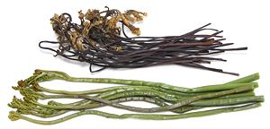
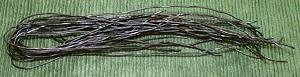
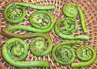
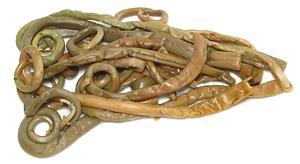

SAFARI
Users
General & History
While Ferns have been with us forever and are common in many areas, they have played only a very minor role as food for humans or livestock. This is particularly due to toxicity, the fern's first line of defense against being eaten. The varieties identified as "edible" are still toxic, but in the small amounts we are likely to eat them they don't pose significant risk to most individuals.
While many ferns are prized as decoratives, some are major pests, particularly the Old World Climbing Fern (Lygodium microphyllum) which is currently strangling large areas of the Everglades in Florida, and the aquatic fern Giant Salvinia (Salvinia molesta) which is covering entire lakes in Hawaii and elsewhere. We cannot be too bitter about aquatic ferns though, since they may have been instrumental in reversing a previous global warming episode - by covering all the lakes formed by melting ice caps and absorbing carbon dioxide. They could come in handy again for that. Also, extracts of Salvinia molesta may be effective against cancers - currently under study.
Varieties
Bracken Fern
 [Brake Fern, Fernbrake; Gosari (Korea); Warabi (Japan); Pteridium aquilinum]
A common fern in temperate climates, immature Bracken fronds are eaten as a vegetable in many parts of the world and particularly in Korea, Japan and parts of China. Native Americans dug up, cooked and ate the rhizomes from which the fronds sprout. These are still used in Japan, Sichuan, China and elsewhere as a starch source (see noodles, below). Details and Cooking.
Bracken Fern is toxic to livestock when a significant part of their
diet. For humans fresh fern should be cooked (simmered 10 minutes) and
eaten in moderation. One of the toxins is a thiamine inhibitor that can
cause a vitamin deficiency if consumed for an extended period. Bracken
also contains a substance identified as a carcinogen and has been placed
in the same risk category as Coffee and Sassafras by the American Cancer
Society. Study is ongoing but still inconclusive, but demographics do not
indicate a notable danger.

We found these noodles, made from starch extracted from bracken fern
root, in one of the large Asian markets here in Los Angeles. The strands
were 0.063 inch diameter and 20 inches long, folded in the middle. Cooked,
they resemble large, dark colored bean starch noodles, but have a lightly
earthy flavor, while been starch noodles are pretty neutral. These come
from Sichuan China, ingredients: fern root starch, rapeseed oil.
Ostrich Fern

This fern, common in the northern U.S and Canada and northern and eastern Europe provides the "fiddleheads" sold in commerce. They have a flavor somewhat similar to asparagus and are a little crunchy if not over cooked. They are popular in season (Spring) where the ferns grow, but are just a curiosity in here in Southern California, at more than U.S. $10 per pound from yuppie outlets like Whole Foods Markets.
Ostrich Fern is considered safe, or about as safe as ferns get. Some people have shown sensitivity to unidentified toxins in them, but most reported incidents of toxicity are from mistaking some other fern for Ostrich Fern. Simmering Ostrich fiddleheads for 10 minutes is said to make them safe for people sensitive to them. Ostrich Ferns are reported to be free of the carcinogens and thiamine inhibitors of the Bracken Fern.
Buying, Storing & Cooking Fiddleheads should be 1
to 1-1/2 inches diameter with no more than 2 inches of stem projecting
from them. They should be crisp, not limp. Refrigerated they will keep
up to 10 days but lose flavor rapidly. Rub off the brown chaff and trim
the end of the stem before cooking.
Royal Fern
 [Flowering Fern; Zenmai Mizuni; Osmunda regalis]
This is one of the largest ferns in Europe, with a range extending
through East Asia to Korea and Japan. There is a closely related North
American species, O. spectabilis. While the photo specimens were
packed in China, the only place you are likely to find them in North
America is in Korean markets, as they are a popular vegetable in Korea.
They are generally vacuum packed in water after being boiled and may be
labeled "Boiled Royal Fern" or "Osmund". The largest stem in the photo
are about 3/8 inch diameter, but most are 1/4 inch or less.
Other Ferns
Other than the ferns identified here as edible, all others should be considered toxic (the edible ones are already toxic enough). In particular Cinnamon Fern and Interrupted Fern are often mistaken for Ostrich Fern resulting in illness. Lady Fern is said to be edible cooked but rather bitter compared to Ostrich Fern.